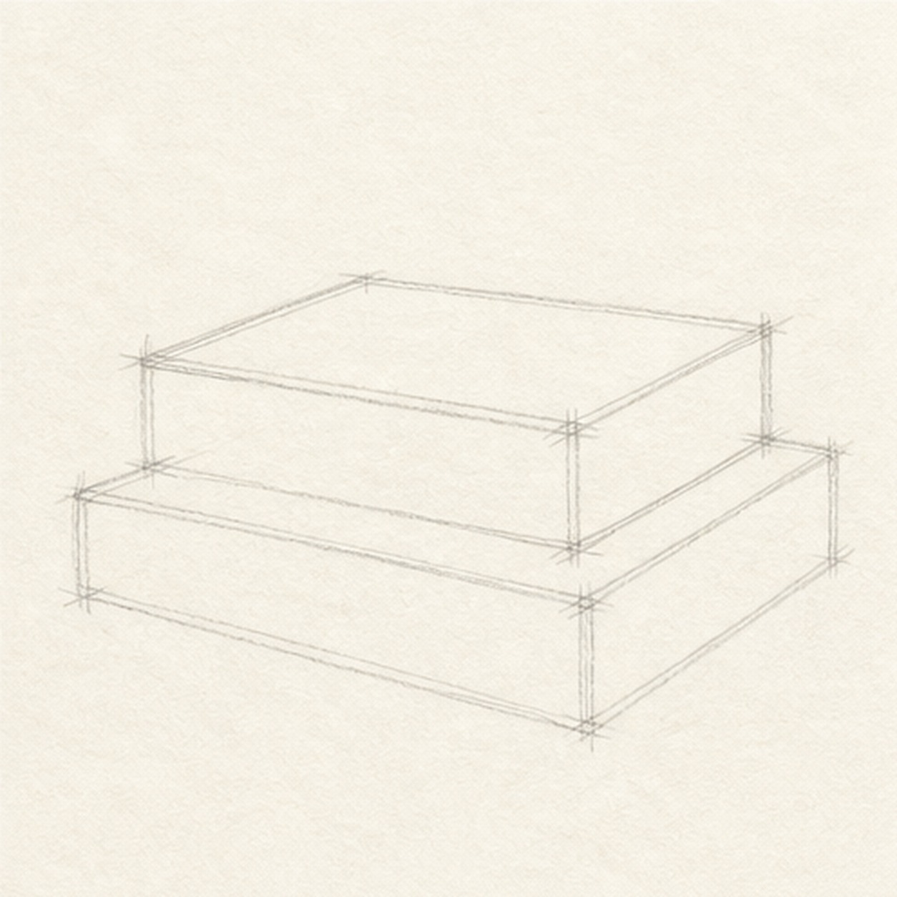
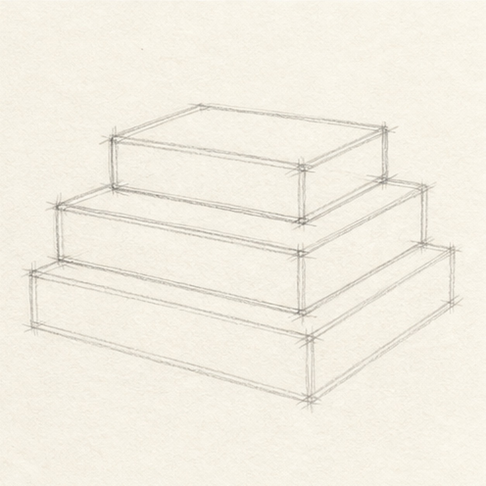
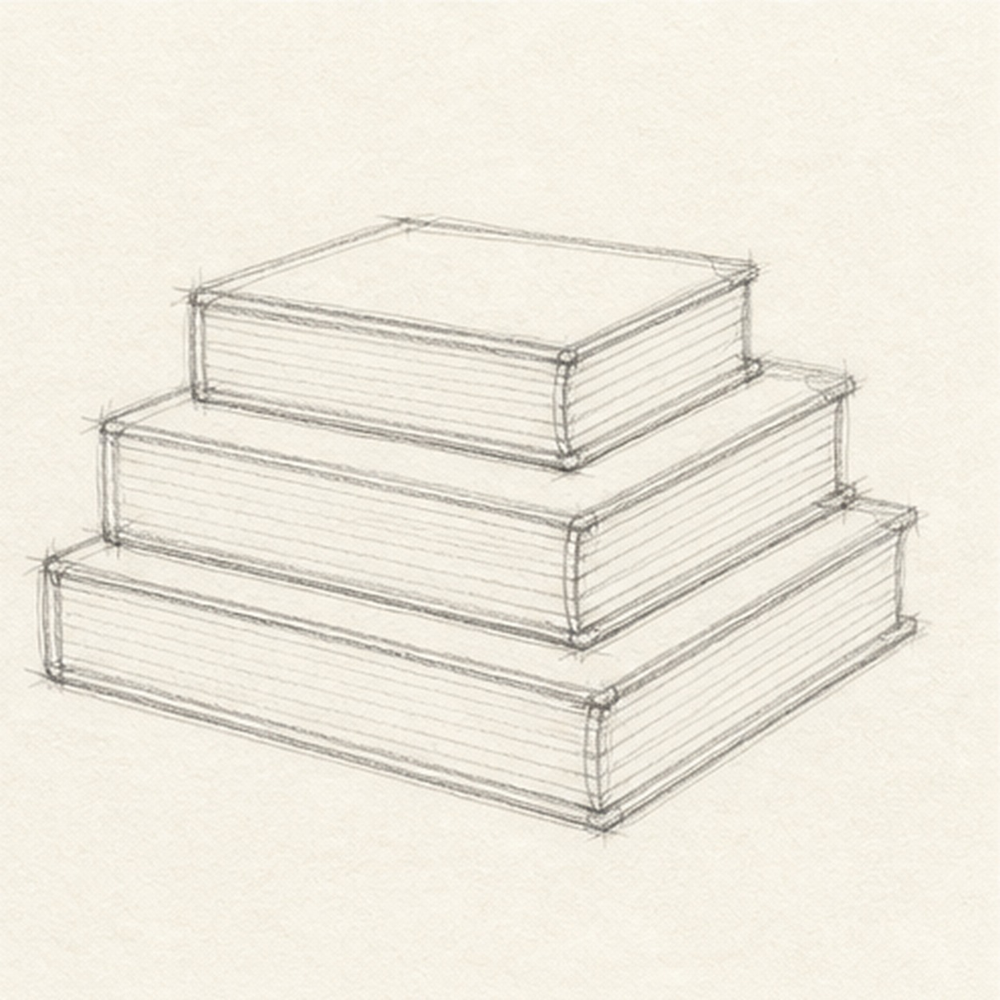
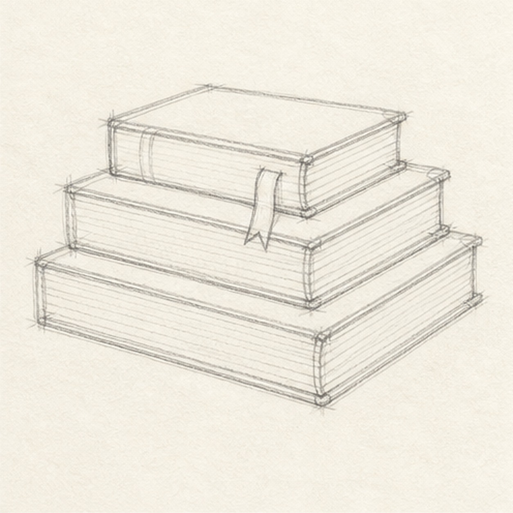

From the archive
Let's draw a stack of books
Treat this as one small practice round: build the subject lightly, notice the shapes, then darken only the lines that help the finished sketch.
-
01

Stack two rectangles
Draw a wide bottom book, then place a second rectangle on top with a small sideways offset.
Sketch tip: Keep the book corners lightly squared. Tiny angle differences make the stack feel natural.
-
02

Place the top book
Add a smaller top book and line up its side edges with the perspective of the books below.
Sketch tip: Use the lower books as rulers. The top book should sit on the stack, not float above it.
-
03

Mark the pages
Add thin page-edge lines along the visible sides of each book.
Sketch tip: Draw fewer page lines than you think you need. A few clear strokes read better than a gray block.
-
04

Drop in the bookmark
Hang a narrow ribbon bookmark from the top book and let it overlap the book below.
Sketch tip: A bookmark works best when it crosses an existing edge. That overlap makes the stack feel layered.
-
05
Add worn cover details
Sketch simple cover bands, corner wear, and a soft shadow under the bottom book.
Sketch tip: Keep the wear marks short and uneven. The books should look used, not dirty.
-
06
Finish the book stack
Darken the keeper lines, clarify the page edges and bookmark, and add restrained graphite shading to the books and shadow.
Sketch tip: Save the darkest value for the gaps between books. Those small shadows do most of the stacking work.